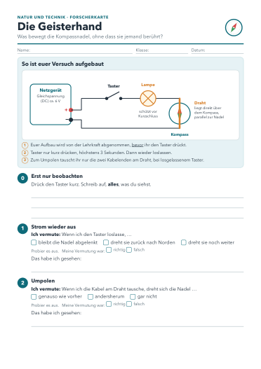
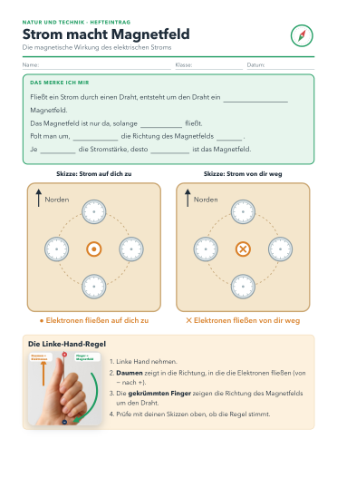

Niemand berührt den Kompass.Trotzdem dreht sich die Nadel.
Was glaubst du, woran das liegt? Flüstere mit deinem Partner. Eine Minute.

Erst vermuten, dann testen. Aufbau vorher abnehmen lassen.
Der Draht geht senkrecht durch die Pappe. Strom fließt. Norden ist oben.
Linke-Hand-Regel
Daumen in Richtung der Elektronen (− nach +), die Finger zeigen das Feld.
